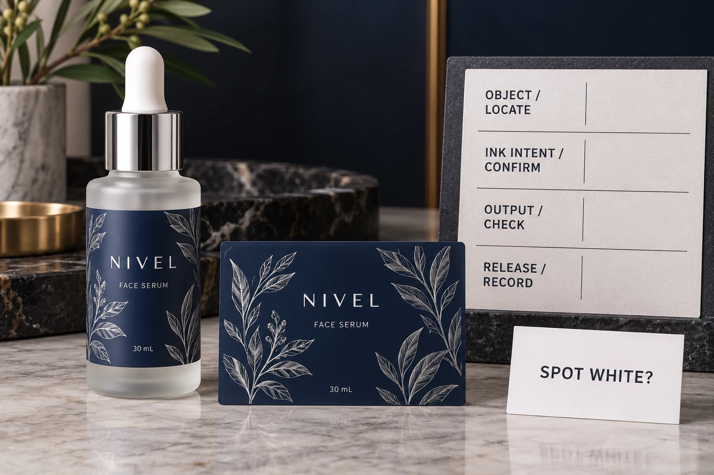

Explain what the overlap is intended to do
Start with the actual design element. Identify its location and intended appearance: a wordmark standing out from a dark panel, a deliberate overlap between colors or an ink layer supporting a clear-label design. These are different instructions.
Adobe's overprint guidance explains knockout and overprint behavior for overlapping colors. It also describes Overprint Preview as an approximation and advises consultation with the print shop about the effect of ink, substrate and production method.
Use that distinction to ask a specific question. Do not approve every overprint attribute automatically, and do not remove every one indiscriminately. An intentional overlap may be part of the agreed production artwork. The designer and receiving prepress team should establish what each relevant object needs to do.
Separate process-white artwork from a spot-white ink layer
A region that looks white on a PDF page does not, by that appearance alone, instruct a press to print white ink. Ask the designer and printer to identify whether the object represents an unprinted or knocked-out area, a defined spot-white separation or another intended arrangement.
Adobe's white-overprint documentation discusses unintended overprint attributes on white objects and output handling. It explicitly distinguishes Spot White objects, which are not affected in the same way by the described discard-white-overprint operation.
That distinction is a reason to obtain prepress clarification, not to apply a blanket checkbox instruction from this article. Output settings, object types and the receiving workflow all need identifying. Do not assume a remembered software default establishes what is in the actual production PDF.
For the appearance of clear labels on a filled container, see the clear cosmetic label guide. This article addresses output behavior in the file; selecting an appropriate white-ink treatment and reviewing its physical appearance remain related but separate tasks.
Review the exact file that will be released
Identify the exported file and revision. Ask the designer or prepress operator to inspect the relevant output preview and separations using the actual receiving workflow. A screenshot from the editable source is not the same object as the exported PDF.
Have the reviewer name the observation. Which object changes when the preview is evaluated? Which ink or separation does it belong to? What was expected and what remains uncertain? Record that location rather than sending an unexplained instruction to fix the white.
A correction can require another export. Review that resulting file and have the receiving printer acknowledge the version. The fact that a source setting changed does not establish that the intended output reached the production handoff.
Keep the buying question distinct from press recipes
The buyer needs to know that the important object has the intended output behavior and that the relevant parties have accepted it. The buyer does not need a generic internet recipe for black ink, trapping width or spot-ink naming.
Obtain production-specific instructions from the printer. If a change affects brand appearance, have the brand's artwork approver review it. Keep the technical explanation attached to the exact file rather than assuming a phrase such as print-ready transfers responsibility without evidence.
The cosmetic color guide covers the physical reference and viewing discussion. An output preview is useful for file interpretation; it does not measure final color, white-ink coverage or applied-pack performance.

Give prepress a review record with an answerable question
Use an editorial handoff record such as this:
| Field | Information to identify | Release question |
|---|---|---|
| Object | Location, artwork element and intended appearance | Can both teams identify the same concern? |
| Color intent | Relevant process or spot object and intended separation | Is the visible white a defined production instruction? |
| Observation | Output-preview finding and reviewer | What differs from the intended behavior? |
| File identity | Exact export and revision | Is this the file being supplied for production? |
| Correction | Agreed source/output change and replacement file | Was the affected output checked again? |
| Acceptance | Prepress acknowledgement and brand appearance review where needed | What is accepted and what remains pending? |
If the object type or intended separation is unknown, ask the designer and printer to resolve it before recording a final release. A smooth-looking preview is not an answer to that technical question.
Two white elements may need different treatment
Consider a hypothetical dark opaque label with white lettering represented by the intended unprinted substrate area. Its output review needs to preserve that agreed effect. Merely seeing white in the design application is not the whole check.
Now consider a clear-film design with an explicitly specified spot-white ink layer. The printer needs that layer supplied and interpreted according to the agreed workflow. Treating it as though it were the same as an ordinary white screen object could change the instruction.
Neither example prescribes a universal setting. Identify the actual objects, construction and supplier requirements, then record the corresponding review. That is more useful than a rule that every white thing must always be treated identically.
Keep the rest of artwork approval connected
An overprint review does not approve font portability or cutting boundaries. Use the separate PDF font checklist and bleed, trim and safe-area guide for those tasks. Each approval should refer to the same released file.
For custom cosmetic labels, provide the container, label size, artwork and quantity by design. Mark the object whose intended output needs clarification and include any printer-supplied separation requirements.
Use the inquiry form to prepare your message, then send the PDF and relevant references through email or WhatsApp. The form does not upload attachments. The useful outcome is an acknowledged file with an explained output intent, not another unqualified final filename.